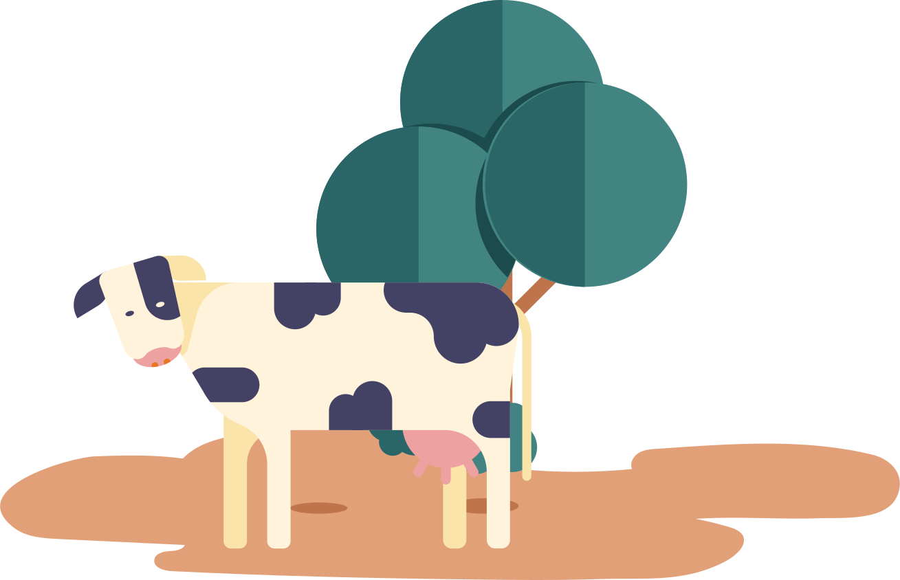

สวนจิตรลดา พื้นที่แห่งการสร้าสรรค์
จุดกำเนิดของอาชีพ ต้นกำเนิดฟาร์มโคนมแห่งแรกของไทย

โครงการของเราแบ่งออกเป็นสองส่วนหลักๆ คือ
1. โครงการแบบไม่ใช่ธุรกิจ
2. โครงการกึ่งธุรกิจ ซึ่งส่วนที่เราจะพาทุกคนไปทำความรู้จักกันนั้น ก็คือ
ส่วนของโครงการกึ่งธุรกิจ หรือฟาร์มโคนมนั้นเอง
โครงการกึ่งธุรกิจเป็นการศึกษาทดลองเกี่ยวกับการ
แปรรูปผลิตภัณฑ์และจัดจำหน่ายสินค้าในราคา
ย่อมเยาในรูปแบบที่ไม่หวังผลกำไรแต่มุ่งเน้นให้
ประชาชนได้บริโภคสินค้าที่มีคุณภาพ และไม่แพง
ทุกคนคงจะสงสัยกันแล้วล่ะสิ
ว่าผลิตภัณฑ์จากฟาร์มโคนมของเรา
นั้นมีอะไรบ้างเรามาทททความรู้จักไปพร้อมๆกันเลย
แม่เอยแม่วัว
เราได้รับโคนมเข้ามาเลี้ยงดูในประเทศไทยเป็นครั้งแรก ตั้งแต่ปีพ.ศ.2505 ซึ่งเป็นโคนมเรดเดนน์จากประเทศเดนมาร์ก ศูนย์จิตรลดาของเราให้ความใส่ใจและดูแลแม่โคทั้ง 6 ตัวเป็นอย่างดี เราคิดค้นและทดลองผลิตอาหารหยาบสดขึ้นมาซึ่งสามารถเลี้ยงโคนมเหล่านี้ได้ทั้งปีไม่มีปัญหาขาดแคลนอาหาร
เมื่อถึงฤดูแล้งแม่โคนมของเราได้รับอาหารที่ดีอย่างสม่ำเสมอทำให้มีสุขภาพแข็งแรงและยังให้น้ำนมคุณภาพดีเยี่ยมอีกด้วย
และน้ำนมที่เราได้รับจากแม่โคในครั้งแรกพระองค์ทรงโปรดเกล้าฯให้พิจารณานำมาแปรรูปหรือทำให้ถูกสุขลักษณะโดยการนึ่งหรือต้มให้สุก ต่อมาทางบริษัท ห้างร้าน สมาคม เอกชน ผู้ใจดี ได้มอบโคนมให้กับเราอีกถึง 17 ตัว
นมรสดี ยูเอชทีรสเด็ด
เมื่อเราทำการรีดน้ำนมจากแม่โคแล้วจะส่งต่อน้ำนมคุณภาพดีเข้าสู่กระบวนการฆ่าเชื้อโดยให้ความร้อนสูงเป็นเวลา 1-2 วินาที ที่อุณหภูมิ 135 องศาเซลเซียสกลายเป็นนมยูเอชทีแสนอร่อยและยังสามารถเก็บไว้ที่อุณหภูมิห้องได้นานถึง
9 เดือน นอกเหนือจากนมยูเอชทีแล้วเรายังได้ทดลองและคิดค้นผลิตภัณฑ์จากนมโคอีกมากมายเลยด้วย
ในปีพ.ศ. 2512 ก็เกิดสภาวะนมล้มตลาดทำให้เกษตรกรถูกกดราคานมลง ในหลวงรัชกาลที่9จึงโปรดให้ก่อสร้างโรงงานแปรรูปนมโคสดเป็นนมผงโดยใช้ชื่อว่า “โรงนมผงสวนดุสิต”เพื่อมอบความรู้และวิธีการผลิตนมผงให้แก่เกษตรกรในปัจจุบันเราได้ขยายกิจการผลิตนมผง ครีม นมสด นมอัดเม็ด และเนยออกจำหน่าย ส่วนเศษนมหรือนมก้อนจำหน่ายในราคาถูกเพื่อนำไปเลี้ยงลูกวัว สุนัข และแมวได้
เนยแข็งหอมกรุ่น
ในปีพ.ศ. 2519 บริษัทสหกรณ์ ซี.ซี. ฟรีสแลนด์ ประเทศเนเธอร์แลนด์ซึ่งเป็นบริษัทแม่ของบริษัท โฟรโมสต์ฟรีสแลนด์ ได้มอบเครื่องมือสำหรับผลิตเนยแข็งให้กับเรา จึงได้ก่อกำเนิดเนยเเข็ง 3 ชนิด ได้แก่ เนยแข็งแชดด้า (Cheddar
Cheese) เนยแข็งเกาด้า(Gouda Cheese)และเนยแข็งปรุงแต่ง นอกจากนี้ยังผลิตไอศกรีม 6 รส นมสดปราศจากไขมัน เนยสด คุกกี้เนยสด โยเกิร์ตพร้อมดื่ม 4 รส และนมข้นหวาน
ยุคสมัยเปลี่ยนเทคโนโลยีก็ต้องมีการพัฒนาขึ้นเพื่อความสะดวกสบาย ความปลอดภัยและลดการใช้แรงงาน
ซึ่งในปัจจุบันโครงการจิตรลดาของเราได้มีการออกแบบฟาร์มใหม่เพื่อให้มีความทันสมัยมากยิ่งขึ้น อีกทั้งยังประหยัดพื้นที่ในการเลี้ยงโคนมถูกต้องตามมาตรฐานสากล มีการใช้อุปกรณ์ติดข้อเท้าแม่วัวเพื่อใช้ในการแสดงประวัติที่เชื่อมต่อกับwifi รวมทั้งการนำเข้าเครื่องรีดนมวัวแบบอัตโนมัติเพื่อประหยัดเวลาและต้นทุนแรงงาน